Zahl
NUMBER · Zahleneingabefeld (Bereich · Dezimalstellen · Einheit · automatische Berechnung)
Was ist ein Zahlenfeld?
- 1.1Feld hinzufügen und Aufbau des Eigenschaftsbereichs
1.1Feld hinzufügen und Aufbau des Eigenschaftsbereichs
Überblick
Zahl (NUMBER) ist ein Feld für numerische Eingaben. Verwenden Sie es für Werte, die verglichen oder berechnet werden, z. B. Körpergröße · Gewicht · Untersuchungswerte. Anders als beim Texttyp können Sie Eingabebereich · Dezimalstellen · Einheit festlegen und den Wert auch automatisch aus anderen Feldwerten berechnen lassen. Für Werte, die wie Zahlen aussehen, aber nicht berechnet werden (Probennummer · Telefonnummer usw.), ist einzeiliger Text besser geeignet — denn führende Nullen gehen verloren.
Bildschirmbeschreibung
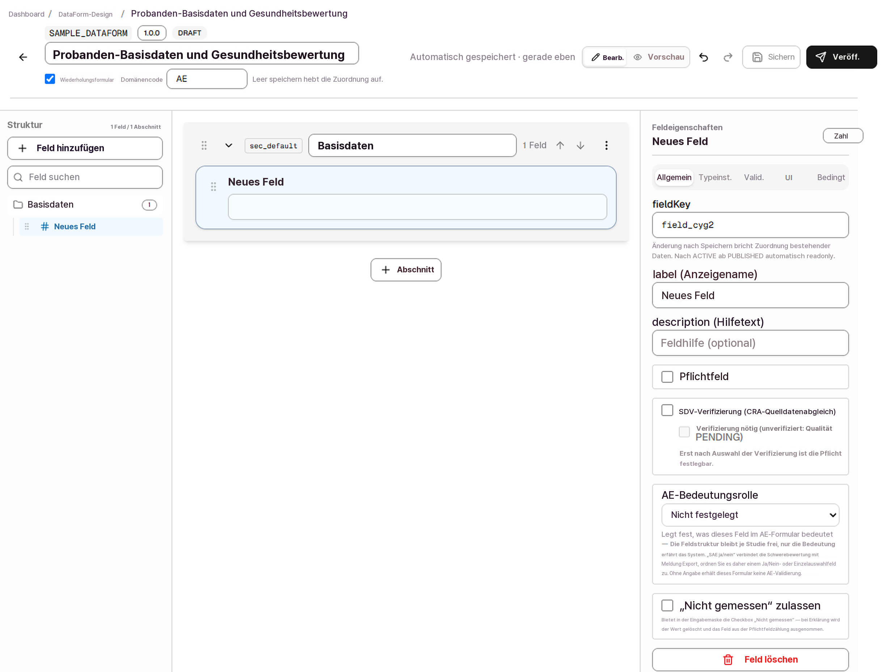
[+ Feld hinzufügen] — Wenn Sie hier den Typ festlegen, wird das Feld erstellt.
Im Strukturbaum wird das neue Feld hinzugefügt. (Es wird mit dem Symbol # für Zahl angezeigt)
Auf dem WYSIWYG-Canvas wird das Eingabefeld angezeigt. Der Canvas ist eine Vorschau der Eingabemaske; Änderungen an den Einstellungen werden daher sofort übernommen.
fieldKey — der tatsächliche Schlüssel, unter dem der Wert gespeichert wird. Er ist auch der Name, mit dem die automatische Berechnung auf dieses Feld verweist. 2.1 · 3.4
label (Anzeigename) · description (Hilfetext) — der auf dem Bildschirm angezeigte Name und die ergänzende Beschreibung. 2.1
Pflichtfeld · SDV-Verifizierung · AE-Bedeutungsrolle · „Nicht gemessen“ zulassen — werden in Kapitel 2 einzeln erläutert.
Typ-Badge — der Typ des ausgewählten Felds. Nach dem Hinzufügen kann er nicht mehr geändert werden.
5 Eigenschafts-Tabs — Allgemein · Typeinstellungen · Validierung · UI · Bedingt. Die Kapitel 2–6 dieses Handbuchs entsprechen den einzelnen Tabs.
Zu beachten
Unbedingt prüfen Datenschäden · Formular nicht abschließbar
- • Der Typ kann nach dem Hinzufügen nicht geändert werden. Wenn Sie den falschen Typ gewählt haben, löschen Sie das Feld und fügen Sie es erneut hinzu. (Nur bei Unterelementen von Tabellen und Feldgruppen ist eine Typänderung ausnahmsweise möglich.)
- • Verwenden Sie den Zahlentyp nicht für Werte, die führende Nullen benötigen.
007wird als7gespeichert. Für Werte, bei denen die Stellenzahl eine Bedeutung hat, wie Proben- oder Probandennummern, ist einzeiliger Text mit regulärem Ausdruck sicherer. - • Nach der Veröffentlichung (PUBLISH) kann die Struktur nicht mehr geändert werden. Sind im laufenden Betrieb Änderungen nötig, veröffentlichen Sie eine neue Version.
Leicht missverständliches Verhalten
- • Wenn Sie Einstellungen ändern, erscheint oben „Änderung erkannt — automatisches Speichern ausstehend“. Kurz darauf wird automatisch gespeichert; Sie können auch [Speichern] wählen, um sofort zu speichern. Rückgängig machen mit
Ctrl+Z.
Tab „Allgemein“ — Name · Pflicht · Verifizierung · Nicht gemessen
- 2.1fieldKey · Anzeigename · Hilfetext
- 2.2Pflichtfeld
- 2.3SDV-Verifizierung (CRA-Quelldatenabgleich)
- 2.4„Nicht gemessen“ zulassen
2.1fieldKey · Anzeigename · Hilfetext
Überblick
Bereich zur Festlegung des Namens eines Felds. Speicherschlüssel (fieldKey) und angezeigter Name (label) sind unterschiedliche Werte, und bis wann sie geändert werden dürfen, ist verschieden.
Bildschirmbeschreibung
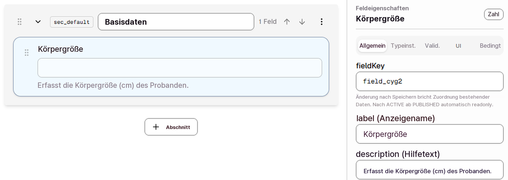
label (Anzeigename) — Geben Sie den Namen des Elements ein, der in der Eingabemaske angezeigt wird.
Erscheint als Feldtitel auf dem Canvas.
description (Hilfetext) — Geben Sie die ergänzende Beschreibung ein, die unter dem Anzeigenamen erscheint. Bleibt sie leer, wird nichts angezeigt.
Erscheint als graue Schrift unter dem Eingabefeld.
fieldKey — der tatsächliche Schlüssel, unter dem der Wert gespeichert wird. Beim Hinzufügen eines Felds wird er automatisch vergeben, z. B. field_cyg2, und kann mit Buchstaben · Ziffern · Unterstrichen geändert werden. Er wird auf dem Bildschirm nicht angezeigt — prüfen Sie unbedingt den Abschnitt „Zu beachten“ unten.
Zu beachten
Unbedingt prüfen Datenschäden · Formular nicht abschließbar
- • ⛔ Ändern Sie den fieldKey nach dem Speichern nicht. Wie der Bildschirmhinweis sagt: „Änderung nach Speichern bricht Zuordnung bestehender Daten“ — bereits eingegebene Werte werden nicht mit dem neuen Schlüssel verknüpft und gehen praktisch verloren.
- • ⛔ Wenn Sie den fieldKey eines Felds ändern, auf das eine automatische Berechnung verweist, wird die Formel ungültig. Die Formel ist über
{fieldKey}verknüpft; bei einer Umbenennung reißt der Verweis ab und das Ergebnis bleibt leer. 3.4 - • Wechselt das Formular nach ACTIVE in den Status PUBLISHED, wird das Eingabefeld fieldKey automatisch schreibgeschützt. Erst ab diesem Zeitpunkt verhindert das System Änderungen; bis dahin müssen Sie selbst darauf achten.
Leicht missverständliches Verhalten
- • Vergeben Sie für Felder, die in Berechnungen verwendet werden, gut lesbare fieldKeys. Mit sprechenden Namen wie
height·weightlassen sich Formeln leichter lesen und prüfen. Diese müssen jedoch vor dem Speichern festgelegt werden.
2.2Pflichtfeld
Überblick
Legt fest, ob dieses Element zwingend ausgefüllt werden muss. Wenn aktiviert, wird das Speichern in der Eingabemaske blockiert, solange der Wert leer ist.
Bildschirmbeschreibung
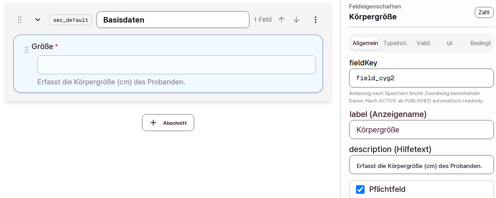
Pflichtfeld — Wenn aktiviert, wird dieses Feld zum Pflichtfeld.
Rechts neben dem Anzeigenamen auf dem Canvas erscheint ein roter Stern (*), der Benutzer auf die Pflicht hinweist.
Zu beachten
Unbedingt prüfen Datenschäden · Formular nicht abschließbar
- •
0ist kein leerer Wert. Eine eingegebene 0 gilt als vorhandener Wert und erfüllt die Pflichtbedingung. Wenn Sie „gemessen, aber 0“ und „nicht gemessen“ unterscheiden müssen, verwenden Sie „Nicht gemessen“ zulassen. 2.4 - • Felder, die durch bedingte Anzeige ausgeblendet sind, sind von der Pflichtprüfung befreit. Kap. 6 Das Ausblenden im Tab „UI“ nimmt sie dagegen nicht aus — verwechseln Sie das nicht. 5.3
Leicht missverständliches Verhalten
- • Automatisch berechnete Felder werden auch dann automatisch aus der Pflichtfeldzählung ausgenommen, wenn sie als Pflichtfeld festgelegt sind — denn Benutzer können sie nicht ausfüllen. Eine Aktivierung ist daher nicht nötig. 3.4
Hinweis
- • Die Pflichtangabe wird für die Bewertung des Formularabschlusses verwendet. Ist ein Pflichtfeld leer, wird das Formular nicht als abgeschlossen gezählt.
2.3SDV-Verifizierung (CRA-Quelldatenabgleich)
Überblick
SDV (Source Data Verification) ist das Verfahren, bei dem der Monitor (CRA) die eingegebenen Werte mit den Quelldaten der Prüfstelle abgleicht. Hier legen Sie fest, ob dieses Feld Gegenstand dieses Abgleichs ist. Diese Einstellung ist bei allen Feldtypen gleich, daher ist auch der Bildschirm unabhängig vom Typ identisch.
Bildschirmbeschreibung


SDV-Verifizierung (CRA-Quelldatenabgleich) — Wenn aktiviert, wird dieses Feld in die Abgleichliste des CRA aufgenommen.
Mit der Aktivierung wird das Unterelement aktiv.
Verifizierung erforderlich (unverifiziert: Qualität PENDING) — kann erst festgelegt werden, nachdem ① aktiviert wurde. Wenn aktiviert, bleibt der Qualitätsstatus der betreffenden Daten auf PENDING, bis der CRA den Abgleich abgeschlossen hat.
Bevor ① aktiviert ist, ist ② ausgegraut und inaktiv. Wie der Bildschirmhinweis sagt: „Erst nach Auswahl der Verifizierung ist die Pflicht festlegbar.“
Zu beachten
Unbedingt prüfen Datenschäden · Formular nicht abschließbar
- • Bei einer Wertänderung wird die Verifizierung aufgehoben. Wird der Wert eines bereits VERIFIED-Felds geändert, fällt der Qualitätsstatus auf PENDING zurück, und der CRA muss erneut abgleichen.
Leicht missverständliches Verhalten
- • SDV kann nicht von der Person durchgeführt werden, die die Daten eingegeben hat. Das System erzwingt eine Kreuzprüfung (Cross-User SoD); eingebende und verifizierende Person müssen daher zwingend verschieden sein.
- • Automatisch berechnete Felder müssen nicht für SDV festgelegt werden. Ihr Wert stammt nicht aus Quelldaten, sondern wird aus anderen Feldern berechnet — abzugleichen sind die referenzierten Felder (z. B. Körpergröße · Gewicht). 3.4
Hinweis
- • Der Qualitätsstatus durchläuft PENDING → VERIFIED → CLEAN. Ist auch nur ein Feld mit Verifizierungspflicht unverifiziert, können die betreffenden Daten nicht CLEAN werden.
- • Werden alle Felder für SDV festgelegt, steigt der Monitoring-Aufwand stark an. Legen Sie vorrangig primäre Endpunkte · Sicherheitsparameter fest.
2.4„Nicht gemessen“ zulassen
Überblick
Mit dieser Funktion wird der Fall, dass eine Untersuchung nicht durchgeführt werden konnte, als eigener Wert erfasst. Bei Zahlenfeldern ist sie besonders wichtig — bleibt das Feld leer, lässt sich „noch nicht eingegeben“ nicht von „nicht gemessen“ unterscheiden; wird stattdessen 0 eingetragen, vermischt sich dies mit dem Messwert 0 und verzerrt die Statistik.
Bildschirmbeschreibung

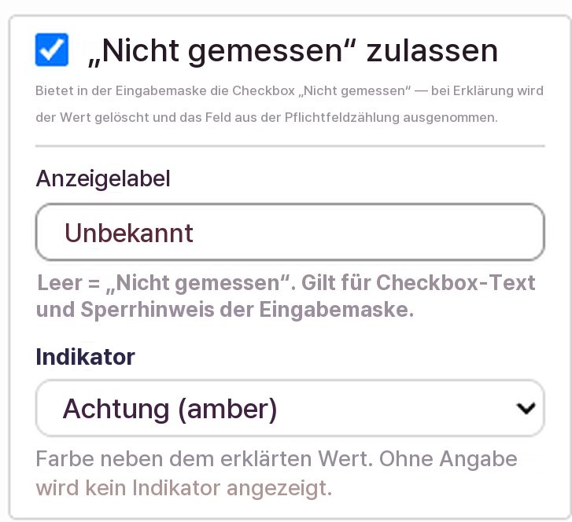
„Nicht gemessen“ zulassen — Wenn aktiviert, erscheint in der Eingabemaske die Checkbox „Nicht gemessen“, und die beiden folgenden Elemente werden angezeigt.
Anzeigelabel — Bleibt es leer, gilt der Standardwert „Nicht gemessen“.
Wenn Sie es in Unbekannt ändern, wird dieser Text sowohl für die Checkbox der Eingabemaske als auch für den Sperrhinweis verwendet.
Indikator — Standardwert ist Keine.
Wenn Sie ihn auf Achtung (amber) ändern, erscheint neben dem erklärten Wert eine Markierung in dieser Farbe.
Zu beachten
Unbedingt prüfen Datenschäden · Formular nicht abschließbar
- • ⛔ Erfassen Sie „nicht gemessen“ nicht ersatzweise als 0. 0 ist ein gültiger Messwert und fließt unverändert in Mittelwert- und Minimumberechnungen ein. Genau diese Verwechslung soll die Erklärung verhindern.
- • Bei der Erklärung wird der Wert gelöscht. Wie der Bildschirmhinweis sagt — „bei Erklärung wird der Wert gelöscht und das Feld aus der Pflichtfeldzählung ausgenommen.“ Bereits eingegebene Inhalte werden gelöscht; informieren Sie die Benutzer daher vorab.
Leicht missverständliches Verhalten
- • Erklärte Felder werden aus der Pflichtfeldzählung ausgenommen. Das Formular kann daher auch bei einem Pflichtfeld abgeschlossen werden.
- • Eine automatische Berechnung, die auf ein als „Nicht gemessen“ erklärtes Feld verweist, liefert ein leeres Ergebnis. Fehlt der Referenzwert, bleibt das Berechnungsergebnis leer — das Speichern schlägt nicht fehl. 3.4
Hinweis
- • Ohne festgelegten Indikator wird die Farbmarkierung nicht angewendet. Wenn eine Hervorhebung nötig ist, wählen Sie z. B. Achtung (amber).
Tab „Typeinstellungen“ — Regeln für die Zahleneingabe
- 3.1Gesamtaufbau des Tabs „Typeinstellungen“
- 3.2Eingabebereich (min · max · Grenzen einschließen)
- 3.3Dezimalstellen · Einheit (decimalPlaces · unit)
- 3.4Automatische Berechnung ① — Formel festlegen
- 3.5Automatische Berechnung ② — Berechnungszeitpunkt · Dezimalstellen
- 3.6Standardwert (defaultValue)
3.1Gesamtaufbau
Überblick
In diesem Tab legen Sie die Eingaberegeln des Zahlenfelds fest. Statt Länge · regulärem Ausdruck wie beim Texttyp geht es um Wertebereich · Dezimalstellen · Einheit. Die hier festgelegten Werte werden beim Speichern vom System erneut geprüft; es handelt sich also nicht nur um einen Hinweis auf dem Bildschirm, sondern um echte Sperrbedingungen.
Bildschirmbeschreibung
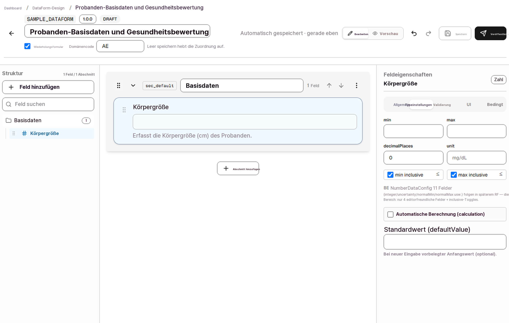
min · max — der kleinste und der größte zulässige Wert. 3.2
decimalPlaces · unit — die zulässige Anzahl an Dezimalstellen und die angezeigte Einheit. 3.3
min inclusive · max inclusive — legen fest, ob der Grenzwert selbst zulässig ist. Standard ist beide aktiviert (größer gleich · kleiner gleich). 3.2
Bildschirmhinweis — Dieser Bildschirm bietet vier Elemente (min · max · decimalPlaces · unit) und zwei Grenz-Toggles. Elemente wie nur ganze Zahlen · Messunsicherheit · Normalbereich werden auf diesem Bildschirm nicht eingestellt. (Siehe „Zu beachten“ unten)
Automatische Berechnung (calculation) — füllt dieses Feld automatisch aus anderen Feldwerten. 3.4
Standardwert (defaultValue) — ein Wert, der bei einer neuen Eingabe vorbelegt wird. 3.6
Zu beachten
Unbedingt prüfen Datenschäden · Formular nicht abschließbar
- • min · max sind die „Sperr“-Achse. Werte außerhalb des Bereichs werden nicht gespeichert. Eine Funktion, die bei Abweichung vom Normalbereich nur warnt (Hervorhebung von Normalwerten), gibt es auf diesem Bildschirm dagegen nicht — wenn Sie den Normalbereich von Untersuchungswerten hervorheben müssen, gestalten Sie das Feld nicht als Zahlentyp, sondern als Feld der Untersuchungspanel-Familie.
- • Der anfänglich angezeigte Wert
0bei decimalPlaces bedeutet „nur ganze Zahlen ohne Dezimalstellen“. Wenn das Element Dezimalstellen benötigt, legen Sie die Stellenzahl unbedingt fest. 3.3
Leicht missverständliches Verhalten
- • Das hellgrau angezeigte
mg/dLim Eingabefeld ist ein Eingabebeispiel (placeholder) und kein eingestellter Wert. Bleibt das Feld leer, wird keine Einheit angezeigt.
Hinweis
- • Ist min größer als max, wird das Speichern abgelehnt. Prüfen Sie beide Werte zusammen.
- • Alle Elemente sind optional. Wenn Sie nichts einstellen, entsteht ein freies Zahleneingabefeld ohne Bereichs- und Stellenbegrenzung.
3.2Eingabebereich (min · max · Grenzen einschließen)
Überblick
Legt den Wertebereich fest, der eingegeben werden kann. Werte außerhalb des Bereichs werden beim Speichern blockiert. Die beiden Elemente sind voneinander unabhängig; es funktioniert auch, wenn nur eines eingegeben wird.
Bildschirmbeschreibung
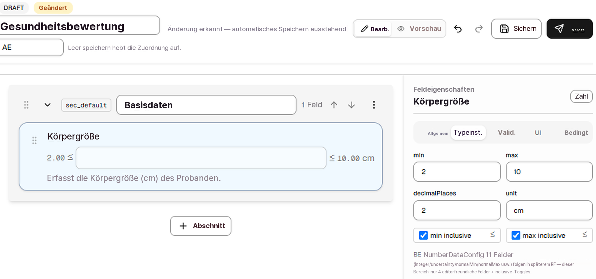
min — der kleinste zulässige Wert.
max — der größte zulässige Wert.
min inclusive · max inclusive — legen fest, ob der Grenzwert selbst zulässig ist. Aktiviert bedeutet größer gleich · kleiner gleich (≥ ≤), deaktiviert größer · kleiner (> <). Standard ist aktiviert.
Ergebnis von ①~③ — links und rechts vom Eingabefeld wird der Bereich angezeigt. Die Aufnahme zeigt 2.00 ≤ □ ≤ 10.00, 2 und 10 sind also eingeschlossen. Benutzer sehen den zulässigen Bereich schon vor der Eingabe.
Zu beachten
Unbedingt prüfen Datenschäden · Formular nicht abschließbar
- • Ob Grenzwerte eingeschlossen werden, muss klinisch entschieden werden. „Systolischer Blutdruck mindestens 90“ und „über 90“ entscheiden z. B. darüber, ob ein Proband mit 90 eingeschlossen wird. Übernehmen Sie den Wortlaut des Prüfplans unverändert.
- • Die Bereichsbegrenzung verhindert bereits die Eingabe. Damit Werte außerhalb der Norm, die dennoch erfasst werden müssen (Ausreißer), nicht blockiert werden, ist es sicherer, den Bereich großzügig anhand physiologisch unmöglicher Werte festzulegen.
- • Wenn Sie in einem bereits laufenden Formular den Bereich einengen, können vorhandene Daten gegen die neue Begrenzung verstoßen. Diese Werte werden beim erneuten Speichern blockiert; entscheiden Sie daher sorgfältig über eine Einengung nach der Veröffentlichung.
Leicht missverständliches Verhalten
- • Es genügt, nur eine Seite festzulegen — wenn nur eine Obergrenze gelten soll, geben Sie nur max ein.
- • Die Regel „Wertebereich“ im Tab „Validierung“ 4.2 führt dieselbe Prüfung durch. Der Unterschied: Sie können den bei Verstoß angezeigten Text selbst festlegen.
Grenzwerte einschließen
| Einstellung | Anzeige | Bedeutung | Bei Eingabe von 2 |
|---|---|---|---|
| min inclusive aktiviert | 2 ≤ | mindestens 2 | Zulässig |
| min inclusive deaktiviert | 2 < | größer als 2 | Blockiert |
| max inclusive aktiviert | ≤ 10 | höchstens 10 | (bei Eingabe von 10) zulässig |
| max inclusive deaktiviert | < 10 | kleiner als 10 | (bei Eingabe von 10) blockiert |
3.3Dezimalstellen · Einheit (decimalPlaces · unit)
Überblick
Legt fest, bis zu welcher Dezimalstelle Werte angenommen werden und welche Einheit gilt. Beide Elemente wirken sich direkt auf die Anzeige in der Eingabemaske und auf die Speicherregeln aus.
Bildschirmbeschreibung

decimalPlaces — die zulässige Anzahl an Dezimalstellen. 2 in der Aufnahme bedeutet, dass bis zu zwei Nachkommastellen angenommen werden. Bei 0 sind nur ganze Zahlen zulässig.
unit — die rechts vom Eingabefeld angezeigte Einheit. In der Aufnahme cm. Die Einheit dient nur der Anzeige und wird nicht mit dem Wert gespeichert — in den Daten steht nur die Zahl.
Ergebnis von ①② — die Bereichsanzeige auf dem Canvas wird wie 2.00 · 10.00 auf die festgelegte Stellenzahl ausgerichtet, und am rechten Rand des Eingabefelds wird die Einheit cm fest angezeigt.
Zu beachten
Unbedingt prüfen Datenschäden · Formular nicht abschließbar
- • ⛔ Prüfen Sie beim Ändern der Einheit unbedingt die bereits gespeicherten Werte. Die Einheit ist nur ein Anzeigetext; auch wenn Sie
kgingändern, werden vorhandene Daten nicht umgerechnet. Vermischen sich in einem Feld Werte mit unterschiedlichen Einheiten, lässt sich das nicht rückgängig machen. - • Legen Sie die Einheit unbedingt fest. Andernfalls geben Benutzer cm und m oder kg und g gemischt ein. Grundsatz ist, das Feld auf die eine im Prüfplan festgelegte Einheit festzulegen.
- • Wenn Sie die Dezimalstellen verringern, geht Genauigkeit verloren. Steht der Wert bei einem Element wie der Körpertemperatur, bei dem eine Nachkommastelle klinisch bedeutsam ist, auf
0, kann 36.8 nicht erfasst werden.
Leicht missverständliches Verhalten
- • Die Dezimalstellen des Ergebnisses einer automatischen Berechnung werden nicht über diesen Wert, sondern separat über precision der Formel festgelegt. 3.5
3.4Automatische Berechnung ① — Formel festlegen
Überblick
Diese Funktion füllt dieses Feld automatisch mit Werten anderer Felder. Sie wird für abgeleitete Werte verwendet, z. B. den BMI aus Gewicht und Körpergröße. Der Wert wird beim Speichern vom System berechnet; Benutzer können in dieses Feld nicht direkt eingeben. Berechnungszeitpunkt · Dezimalstellen und Schreibregeln folgen in 3.5.
Bildschirmbeschreibung
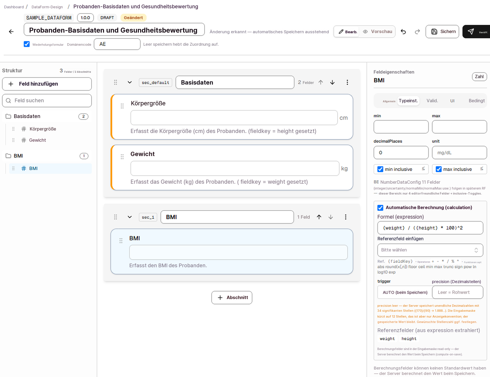
Automatische Berechnung (calculation) — Wenn aktiviert, werden die folgenden Einstellungen angezeigt.
Formel (expression) — Geben Sie die referenzierten Felder im Format {fieldKey} ein.
Die Liste der Referenzfelder wird automatisch aus der Formel extrahiert (weight · height) — prüfen Sie, ob alle beabsichtigten Felder aufgeführt sind.
Referenzfeld einfügen — Wählen Sie ein Feld desselben Formulars aus der Liste, um es in die Formel einzufügen. Sie können es auch direkt eingeben.
Die referenzierten Felder Körpergröße · Gewicht müssen sich im selben Formular befinden. Werte aus anderen Formularen können nicht referenziert werden.
Zu beachten
Unbedingt prüfen Datenschäden · Formular nicht abschließbar
- • ⛔ Die Formel kennt keine Einheiten. Wird die Körpergröße in
cmerfasst, muss sie für den BMI in m umgerechnet werden ({height} / 100). Auch bei falscher Umrechnungsrichtung blockiert das System nicht, sondern speichert stillschweigend den falschen Wert; prüfen Sie das Ergebnis daher vor der Veröffentlichung unbedingt mit echten Werten. - • ⛔ Auch wenn die Berechnung fehlschlägt, ist das Speichern erfolgreich. Ist eine Berechnung nicht möglich, etwa weil ein Referenzfeld leer ist oder durch 0 geteilt wird, bleibt nur dieses Feld leer, und das Formular wird trotzdem gespeichert. Ein leeres Ergebnis löst keine Fehlermeldung aus; prüfen Sie leere Berechnungsergebnisse daher regelmäßig.
Leicht missverständliches Verhalten
- • Formeln, die sich gegenseitig referenzieren (Zirkelbezug), werden bei der Veröffentlichung blockiert. Auch wenn Sie ein referenziertes Feld löschen oder seinen fieldKey ändern, wird die Formel ungültig. 2.1
- • Wird auf ein als „Nicht gemessen“ erklärtes Feld verwiesen, ist das Ergebnis leer. Denn der Referenzwert entfällt. 2.4
3.5Automatische Berechnung ② — Berechnungszeitpunkt · Dezimalstellen · Einschränkungen
Überblick
In diesem Bereich legen Sie fest, wann die in 3.4 eingegebene Formel berechnet wird und mit wie vielen Stellen das Ergebnis gespeichert wird. Die Hinweistexte darunter erklären, wie sich Berechnungsfelder von normalen Feldern unterscheiden.
Bildschirmbeschreibung
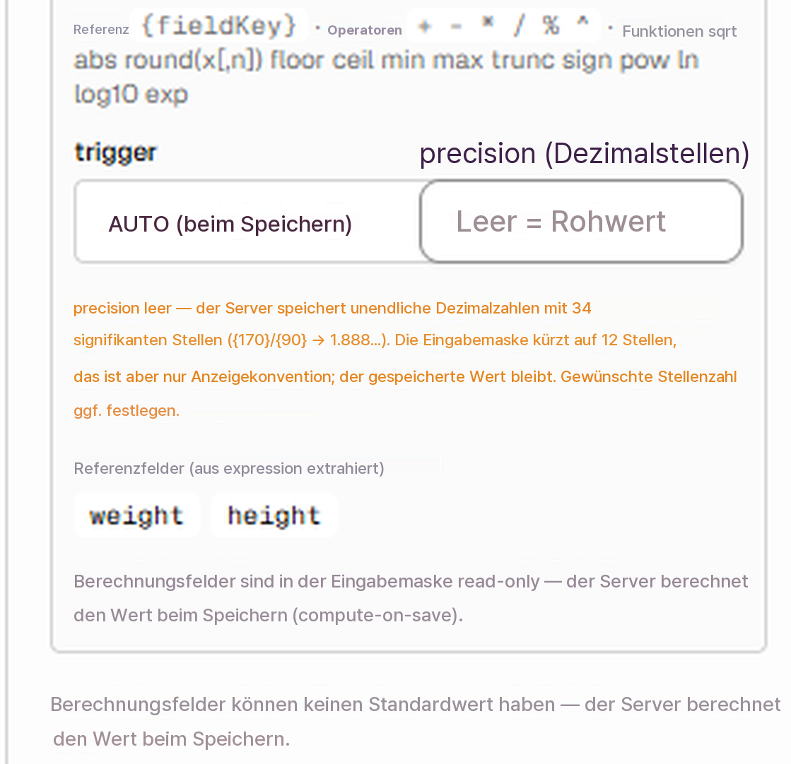
trigger · precision (Dezimalstellen) — AUTO (beim Speichern) bedeutet, dass bei jedem Speichern neu berechnet wird; bleibt precision leer, wird der berechnete Wert unverändert gespeichert.
Die in der Formel verwendbaren Operatoren und Funktionen sind aufgeführt. (Siehe „D.“ unten)
⚠ Bildschirmwarnung — Bleibt precision leer, werden nicht aufgehende Werte als sehr lange Dezimalzahl gespeichert. Auch wenn die Eingabemaske sie kurz anzeigt, bleibt der gespeicherte Wert unverändert; legen Sie daher eine beabsichtigte Stellenzahl unbedingt fest.
Bildschirmhinweis — Berechnungsfelder sind in der Eingabemaske schreibgeschützt und können aus demselben Grund keinen Standardwert haben. 3.6
Zu beachten
Unbedingt prüfen Datenschäden · Formular nicht abschließbar
- • precision ist keine Anzeigeregel, sondern eine Speicherregel. Bleibt sie leer, erscheint der Wert in der Eingabemaske zwar kurz, im gespeicherten Wert bleibt aber die lange Dezimalzahl erhalten. Da dies bei Export · Statistik zu abweichend wirkenden Werten führt, legen Sie eine klinisch sinnvolle Stellenzahl fest.
Leicht missverständliches Verhalten
- • Berechnungsfelder sind in der Eingabemaske schreibgeschützt, ihr Wert wird beim Speichern berechnet. Da Benutzer sie nicht ausfüllen können, werden sie auch dann automatisch aus der Pflichtfeldzählung ausgenommen, wenn sie als Pflichtfeld festgelegt sind. 2.2
- • Es ist ein anderes Element als decimalPlaces in den Typeinstellungen 3.3. decimalPlaces ist die zulässige Stellenzahl bei direkter Eingabe durch Benutzer, precision die Stellenzahl, mit der das Berechnungsergebnis gespeichert wird.
Hinweis
- • Lange Formeln sind schwer zu prüfen. Wenn Sie Zwischenwerte in eigene Berechnungsfelder aufteilen, finden Sie Fehler leichter.
Verwendbare Elemente in Formeln
- • Referenz
{fieldKey}(anderes Feld im selben Formular) · Operatoren+-*/%^(Potenz) · Klammern - • Funktionen —
sqrtabsround(x[,n])floorceilminmaxtruncsignpowlnlog10exp - • Beispiele — Körperoberfläche (BSA · Mosteller):
sqrt(({height} * {weight}) / 3600)· Body-Mass-Index (BMI · Körpergröße in cm erfasst):{weight} / ({height} / 100)^2
3.6Standardwert (defaultValue)
Überblick
Ein Wert, der beim Start einer neuen Eingabe vorbelegt wird. Er verringert den Eingabeaufwand bei Elementen, bei denen die meisten Probanden denselben Wert eingeben.
Bildschirmbeschreibung
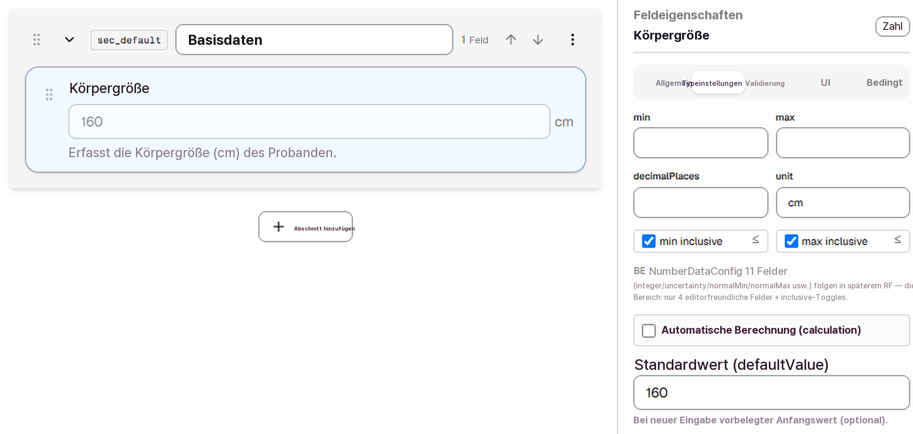
160 — erscheint vorbelegt im Eingabefeld auf dem CanvasStandardwert (defaultValue) — Geben Sie den Anfangswert ein, der bei einer neuen Eingabe vorbelegt wird. (optional)
Im Eingabefeld auf dem Canvas erscheint der Standardwert bereits eingetragen. Die Einheit (cm) bleibt rechts unverändert.
Zu beachten
Unbedingt prüfen Datenschäden · Formular nicht abschließbar
- • ⛔ Legen Sie für Messwerte keinen Standardwert fest. Ist in einem Zahlenfeld bereits ein Wert eingetragen, wird ein Wert unverändert gespeichert, bei dem nicht bestätigt ist, ob tatsächlich gemessen wurde. Besonders gefährlich ist das bei Werten, die sich je Proband unterscheiden müssen, wie Körpergröße · Gewicht · Untersuchungswerte.
- • Nicht zusammen mit der automatischen Berechnung verwendbar. Denn der Wert eines Berechnungsfelds wird beim Speichern vom System berechnet. 3.4
Leicht missverständliches Verhalten
- • Der Standardwert gilt nur für neu erstellte Eingaben. Bereits gespeicherte Daten werden nicht geändert.
Hinweis
- • Auch der Standardwert muss die Bereichs- und Dezimalstellenbegrenzung 3.2 · 3.3 erfüllen. Ein Standardwert, der gegen die Begrenzung verstößt, wird beim Speichern blockiert.
- • Sinnvoll ist ein Standardwert etwa bei im Prüfplan festgelegten Werten (z. B. Dosis · Standardvisite).
Tab „Validierung“ — Wertprüfung vor dem Speichern
- 4.1Ohne Validierungsregeln
- 4.2Regel hinzufügen
- 4.3Fertig erstellte Regel
4.1Ohne Validierungsregeln
Überblick
In diesem Tab werden Regeln gesammelt, die vor dem Speichern prüfen, ob ein Wert die Bedingungen erfüllt. Verwenden Sie ihn, wenn Sie feinere Bedingungen als die Bereichsbegrenzung der Typeinstellungen Kap. 3 setzen oder den bei Verstoß angezeigten Text selbst festlegen möchten.
Bildschirmbeschreibung
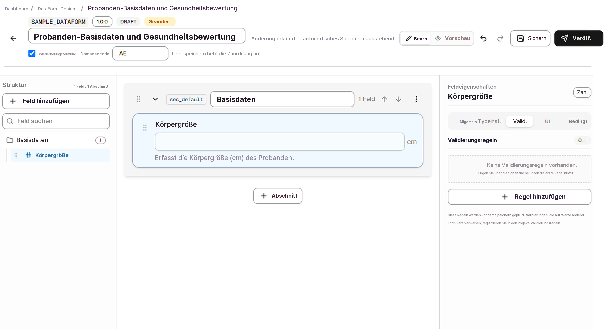
[+ Regel hinzufügen] — erstellt die erste Regel. Der Bildschirm nach der Auswahl wird in 4.2 erläutert.
Bereich Validierungsregeln und Anzahl der registrierten Regeln. Anfangs 0 Regeln.
Ohne Regeln erscheint der Hinweis „Keine Validierungsregeln vorhanden. Fügen Sie über die Schaltfläche unten die erste Regel hinzu.“
Hinweis unten — „Diese Regeln werden vor dem Speichern geprüft. Validierungen, die auf Werte anderer Formulare verweisen, registrieren Sie in den Projekt-Validierungsregeln.“
Zu beachten
Unbedingt prüfen Datenschäden · Formular nicht abschließbar
- • Validierungen, die auf Werte anderer Formulare verweisen, können hier nicht erstellt werden. Registrieren Sie solche Regeln im Bildschirm „Projekt-Validierungsregeln“. Dieser Tab behandelt nur Prüfungen, die innerhalb desselben Formulars abgeschlossen sind.
Leicht missverständliches Verhalten
- • Oft genügen min · max der Typeinstellungen. Dieselbe Bereichsprüfung muss nicht doppelt an zwei Stellen gesetzt werden. 3.2
- • Sie können mehrere Regeln erstellen; gespeichert wird nur, wenn alle aktiven Regeln erfüllt sind.
4.2Regel hinzufügen
Überblick
Wenn Sie in 4.1 [+ Regel hinzufügen] wählen, wird der Block Regel 1 erstellt. Die bei Zahlenfeldern am häufigsten verwendete Art ist Wertebereich: Sie prüft dasselbe wie min · max der Typeinstellungen, Sie können aber Text und Verhalten bei Verstoß selbst festlegen.
Bildschirmbeschreibung
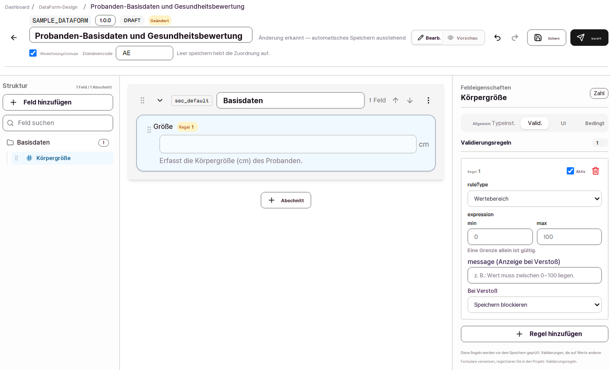
[+ Regel hinzufügen] — erstellt eine weitere Regel. (Dieselbe Schaltfläche, die Sie in 4.1 gewählt haben.)
Der Block „Regel 1“ wird erstellt, und neben dem Anzeigenamen auf dem Canvas erscheint das Badge „Regel 1“.
Die Regelanzahl ändert sich auf 1 Regel.
Checkbox Aktiv und Symbol Löschen — Wenn Sie das Häkchen entfernen, können Sie die Regel vorübergehend aussetzen, ohne sie zu löschen. Das Löschsymbol löscht die Regel endgültig.
ruleType — die Art der Regel. In der Aufnahme ist Wertebereich ausgewählt.
min — die Untergrenze des Bereichs.
max — die Obergrenze des Bereichs.
Die hellgrauen 0 · 100 und „z. B.: Wert muss zwischen 0~100 liegen.“ sind Eingabebeispiele und keine eingestellten Werte. Wie der Bildschirmhinweis sagt: „Eine Grenze allein ist gültig.“
message (Anzeige bei Verstoß) — der Text, der Benutzern bei einem Regelverstoß angezeigt wird.
Bei Verstoß — Wählen Sie zwischen Speichern blockieren und Warnung.
Zu beachten
Unbedingt prüfen Datenschäden · Formular nicht abschließbar
- • Bleibt message leer, wissen Benutzer nicht, warum gesperrt wurde. Geben Sie den zulässigen Bereich direkt an, z. B.
Körpergröße muss zwischen 0~200cm liegen. - • Die Bereichsbegrenzung der Typeinstellungen 3.2 und diese Regel gelten gemeinsam. Gespeichert wird nur, wenn beide erfüllt sind — widersprechen sich die Bereiche, kann gar kein Wert gespeichert werden; es ist daher sicherer, nur eine von beiden zu verwenden.
Leicht missverständliches Verhalten
- • Speichern blockieren verhindert das Speichern, bis der Wert korrigiert ist; Warnung weist darauf hin, erlaubt aber das Speichern. In der Praxis gilt: physiologisch unmögliche Werte mit Speichern blockieren, seltene, aber mögliche Werte mit Warnung.
- • Wählen Sie erneut [+ Regel hinzufügen], um Regel 2, 3 … hinzuzufügen. Gespeichert wird nur, wenn alle aktiven Regeln erfüllt sind.
4.3Fertig erstellte Regel
Überblick
Die leeren Elemente aus 4.2 sind ausgefüllt. Mit dieser Einstellung wird bei Eingabe eines Werts über 200 das Speichern blockiert und der festgelegte Text angezeigt.
Bildschirmbeschreibung
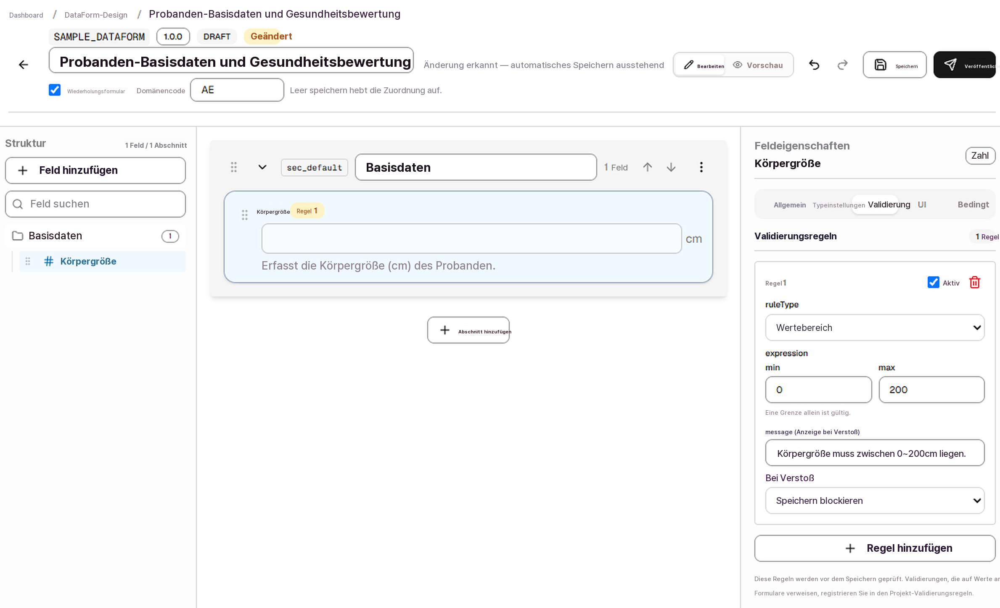
ruleType = Wertebereich — eine Regel, die die Größe eines Zahlenwerts prüft.
min — in der Aufnahme leer gelassen. Die hellgraue 0 ist nur ein Eingabebeispiel und kein eingestellter Wert.
max = 200 — nur die Obergrenze ist festgelegt.
Bildschirmhinweis — „Eine Grenze allein ist gültig.“ Wie in der Aufnahme funktioniert die Regel auch nur mit Obergrenze ordnungsgemäß.
message = Körpergröße muss zwischen 0~200cm liegen. — der Text, der Benutzern bei Verstoß angezeigt wird.
Bei Verstoß = Speichern blockieren — gespeichert wird erst, wenn die Bedingung erfüllt ist.
Zu beachten
Unbedingt prüfen Datenschäden · Formular nicht abschließbar
- • ⛔ Meldung und tatsächliche Bedingung stimmen nicht überein. Der Text in der Aufnahme meldet „zwischen 0~200cm“, da min aber leer ist, werden auch negative Werte akzeptiert. Um auch die Untergrenze zu sperren, müssen Sie bei min 0 eingeben. Stimmen Sie die Meldung unbedingt mit der tatsächlichen Einstellung ab — andernfalls verlieren Benutzer das Vertrauen in die Regel.
Leicht missverständliches Verhalten
- • Nur eine Seite festzulegen ist normales Verhalten. Ob jedoch „nur eine Obergrenze gewollt war oder die Untergrenze vergessen wurde“, zeigt sich an der Meldung. Prüfen Sie vor dem Speichern beide Felder zusammen.
- • Auch nach dem Speichern der Regel wird ihre Anwendung sofort ausgesetzt, wenn Sie das Häkchen bei Aktiv entfernen — verwenden Sie dies, um eine Regel vorübergehend auszusetzen, ohne sie zu löschen. 4.2 ②
Hinweis
- • Typeinstellungen Kap. 3 und Validierungsregeln Kap. 4 gelten gemeinsam. Gespeichert wird nur, wenn Bereichsbegrenzung und Validierungsregeln beide erfüllt sind.
Tab „UI“ — Bildschirmanordnung und Hinweistexte
- 5.1Gesamtaufbau des Tabs „UI“
- 5.2Layoutbreite
- 5.3Schreibgeschützt · Ausblenden
- 5.4placeholder · helpText
5.1Gesamtaufbau
Überblick
In diesem Tab legen Sie nicht den Wert selbst fest, sondern wie das Feld auf dem Bildschirm angeordnet und erläutert wird. Die Einstellungen dieses Tabs ändern die gespeicherten Daten nicht. Ausblenden verbirgt das Feld jedoch nur auf dem Bildschirm und nimmt es nicht aus der Pflichtfeldzählung aus; lesen Sie daher vor der Verwendung 5.3.
Bildschirmbeschreibung
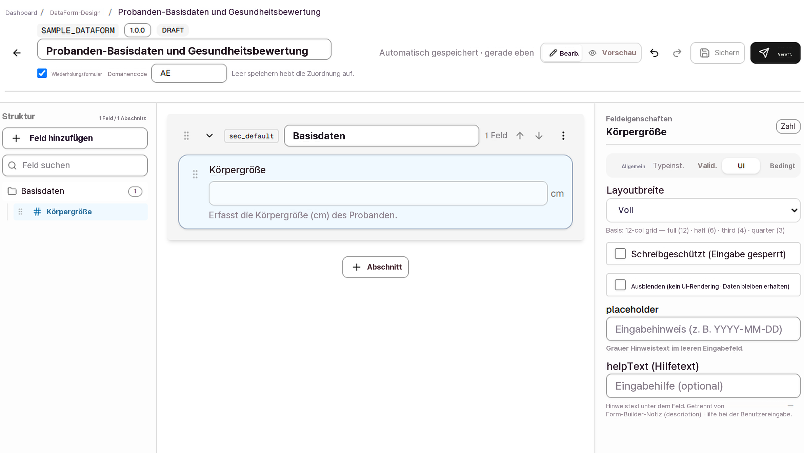
Layoutbreite — die Breite, die dieses Feld in einer Zeile einnimmt. Die Bedeutung der Optionen steht im Hinweis direkt darunter: „Basis: 12-col grid — full (12) · half (6) · third (4) · quarter (3)“. 5.2
Schreibgeschützt (Eingabe gesperrt) — wird angezeigt, kann aber nicht geändert werden. 5.3
Ausblenden (kein UI-Rendering · Daten bleiben erhalten) — verbirgt das Feld auf dem Bildschirm. 5.3
placeholder — grauer Hinweis im Eingabefeld, solange kein Wert vorhanden ist. 5.4
helpText (Hilfetext) — Hinweistext, der unter dem Feld angezeigt wird. 5.4
Zu beachten
Leicht missverständliches Verhalten
- • Die hellgrauen Texte
Eingabehinweis (z. B. YYYY-MM-DD)·Eingabehilfe (optional)in den Eingabefeldern sind Eingabebeispiele und keine eingestellten Werte. - • Bei Zahlenfeldern ist eine geringere Breite unproblematisch. Da die Werte kurz sind und auch in schmalen Feldern vollständig sichtbar bleiben, wird das Formular kürzer, wenn Sie zusammengehörige Elemente wie Körpergröße · Gewicht mit halber Breite nebeneinander anordnen. 5.2
- • Automatisch berechnete Felder sind unabhängig von der Einstellung in der Eingabemaske bereits schreibgeschützt. Eine separate Festlegung ist nicht nötig. 3.4
Hinweis
- • Standard ist Layoutbreite = Voll; Schreibgeschützt · Ausblenden sind deaktiviert.
5.2Layoutbreite
Überblick
Wählen Sie die Breite, die dieses Feld im 12-column grid einnimmt, das eine Zeile in 12 Spalten teilt. Da Zahlenwerte kurz sind und auch schmal gut lesbar bleiben, ist dies besonders wirksam, um zusammengehörige Werte nebeneinander anzuordnen und das Formular zu verkürzen.
Bildschirmbeschreibung
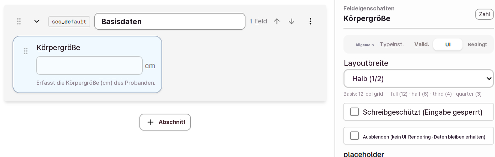
Layoutbreite — Legen Sie die Breite in der Auswahlliste fest. Im Beispiel Halb (1/2).
Das Eingabefeld auf dem Canvas wird auf halbe Breite verkleinert. Die Einheit (cm) bleibt rechts am schmaleren Eingabefeld angehängt.
Zu beachten
Unbedingt prüfen Datenschäden · Formular nicht abschließbar
- • Verringern Sie die Breite von Feldern mit Bereichsanzeige nicht zu stark. Da links und rechts vom Eingabefeld
2.00 ≤ … ≤ 10.00 cmangezeigt wird 3.2 · 3.3, bleibt bei einem schmalen Feld kaum Platz für die eigentliche Eingabe.
Leicht missverständliches Verhalten
- • Wenn Sie die Breite verringern, wird das nächste Feld in derselben Zeile angeordnet. Übersteigt die Summe einer Zeile 12, wird in die nächste Zeile umgebrochen.
Hinweis
- • Auf Geräten mit schmalem Bildschirm können die Felder unabhängig von der Einstellung einzeln untereinander angeordnet werden.
Breitenoptionen
| Option | Belegte Spalten | Anzahl pro Zeile | Geeignetes Beispiel |
|---|---|---|---|
| Voll | 12 | 1 | Einzelner Wert |
| Halb (1/2) | 6 | 2 | Körpergröße · Gewicht |
| Drittel (1/3) | 4 | 3 | Systolisch · Diastolisch · Puls |
| Viertel (1/4) | 3 | 4 | Gruppe von Untersuchungswerten |
5.3Schreibgeschützt · Ausblenden
Überblick
Damit verhindern Sie, dass ein Feld geändert wird, oder sorgen dafür, dass es nicht angezeigt wird. In beiden Fällen bleiben die gespeicherten Daten erhalten.
Bildschirmbeschreibung
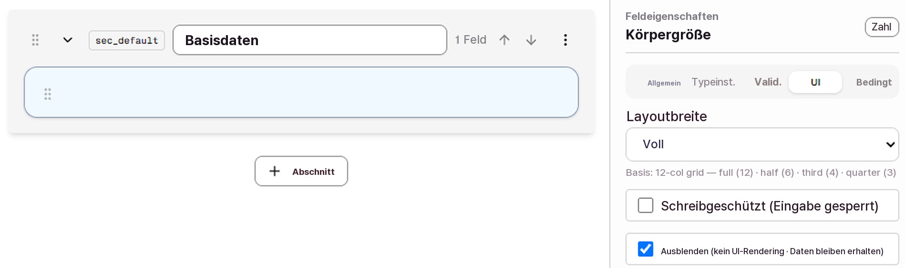
Schreibgeschützt (Eingabe gesperrt) — der Wert wird angezeigt, kann aber von Benutzern nicht geändert werden. (In dieser Aufnahme deaktiviert)
Ausblenden (kein UI-Rendering · Daten bleiben erhalten) — wird in der Eingabemaske nicht angezeigt. Bereits gespeicherte Werte werden nicht gelöscht.
Das Feld verschwindet vom Canvas, und der Abschnitt wirkt leer.
Zu beachten
Unbedingt prüfen Datenschäden · Formular nicht abschließbar
- • ⛔ Blenden Sie keine Pflichtfelder aus. Das Ausblenden im Tab „UI“ verbirgt das Feld nur auf dem Bildschirm und nimmt es nicht aus der Pflichtfeldzählung aus — ein Element, das Benutzer nicht ausfüllen können, bleibt im Nenner, und das Formular kann nicht abgeschlossen werden.
- • ⛔ Blenden Sie keine Referenzfelder einer automatischen Berechnung aus. Benutzer können dann keinen Wert eingeben, und das Berechnungsergebnis bleibt dauerhaft leer. 3.4
Leicht missverständliches Verhalten
- • Es unterscheidet sich vom Ausblenden im Tab „Bedingt“. Felder, die ausgeblendet sind, weil die Bedingung nicht zutrifft, werden aus der Pflichtfeldzählung ausgenommen Kap. 6. Obwohl beide als „Ausblenden“ bezeichnet werden, ist die Behandlung bei der Validierung genau entgegengesetzt; unterscheiden Sie daher beides.
- • Schreibgeschützt und Ausblenden sind verschieden. Schreibgeschützt bedeutet „angezeigt, aber nicht änderbar“, Ausblenden „nicht angezeigt“. Für Elemente, deren Wert angezeigt werden muss, wie Berechnungsergebnisse, verwenden Sie Schreibgeschützt.
Hinweis
- • Auch ausgeblendet bleibt das Feld im Strukturbereich erhalten — Sie können es erneut auswählen und die Einstellung zurücksetzen.
5.4placeholder · helpText
Überblick
Zwei Texte, die Benutzern mitteilen, was und wie sie eingeben sollen. Sie unterscheiden sich in Anzeigeposition und Zeitpunkt des Verschwindens.
Bildschirmbeschreibung
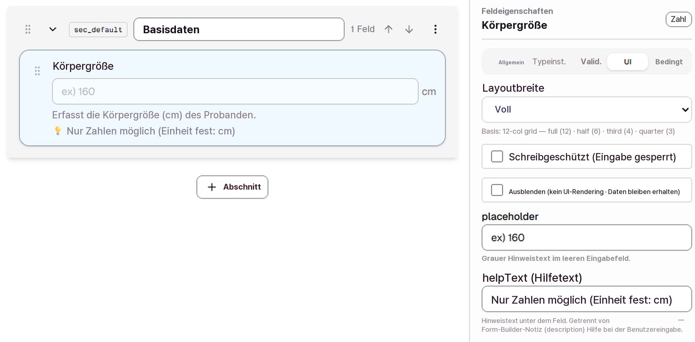
placeholder — Geben Sie den Hinweistext ein, der im Eingabefeld angezeigt wird. Die Aufnahme zeigt ex) 160 und damit Stellenzahl und Form als Beispiel.
Erscheint grau im Eingabefeld. Sobald Benutzer mit der Eingabe beginnen, verschwindet er.
helpText (Hilfetext) — Geben Sie den Hinweistext ein, der unter dem Feld angezeigt wird. Die Aufnahme zeigt Nur Zahlen möglich (Einheit fest: cm).
Erscheint unter dem Feld zusammen mit einem Glühbirnensymbol (💡). Er bleibt auch während der Eingabe sichtbar.
Zu beachten
Unbedingt prüfen Datenschäden · Formular nicht abschließbar
- • Teilen Sie Einheit und Dezimalstellen per helpText mit. Wenn Sie wie in der Aufnahme „Einheit fest: cm“ angeben, verringern Sie Fehler wie die Eingabe in m oder das Mit-Eintippen der Einheit. Da placeholder bei Beginn der Eingabe verschwindet, eignet er sich nicht für Hinweise, die auch während der Eingabe sichtbar sein müssen.
- • Wenn Sie eine Bereichsbegrenzung 3.2 gesetzt haben, weisen Sie auch auf diesen Bereich hin. Der Bereich wird links und rechts vom Eingabefeld angezeigt, warum er gilt, lässt sich aber nur über helpText vermitteln.
- • description und helpText sind unterschiedliche Elemente. Wie der Bildschirmhinweis sagt — helpText: „Getrennt von Form-Builder-Notiz (description) — Hilfe bei der Benutzereingabe“. Wenn Sie beide eingeben, werden zwei Zeilen zusammen angezeigt.
Unterschied der drei Texte
| Element | Anzeigeposition | Bei Beginn der Eingabe | Einstellort |
|---|---|---|---|
| placeholder | im Eingabefeld (grau) | verschwindet | Tab „UI“ |
| helpText | unter dem Feld (💡) | bleibt sichtbar | Tab „UI“ |
| description | unter dem Anzeigenamen | bleibt sichtbar | Tab „Allgemein“ 2.1 |
Tab „Bedingt“ — Anzeige abhängig von anderen Werten
- 6.1Bedingte Anzeige aktivieren
- 6.2Bedingung festlegen
6.1Bedingte Anzeige aktivieren
Überblick
Mit dieser Funktion wird das Feld abhängig vom Wert eines anderen Felds angezeigt oder ausgeblendet. Sie wird für Verzweigungen verwendet, z. B. um einen Zahlenwert nur abzufragen, wenn „Voruntersuchungsdaten vorhanden = O“.
Bildschirmbeschreibung
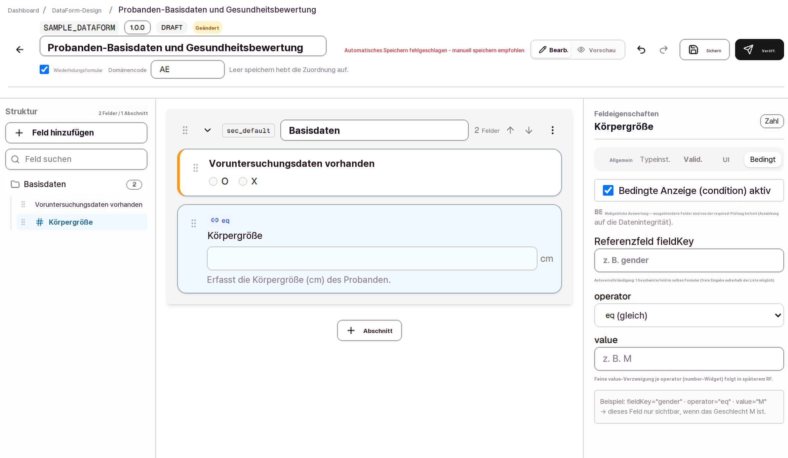
Bedingte Anzeige (condition) aktiv — Wenn aktiviert, werden die folgenden Bedingungseinstellungen angezeigt.
Über dem Feld auf dem Canvas erscheint das Badge 🔗 eq und zeigt an, dass eine Bedingung angewendet wird.
⚠ Bildschirmhinweis — „ausgeblendete Felder sind von der required-Prüfung befreit (Auswirkung auf die Datenintegrität).“ Die Bedingung wird vom System ausgewertet.
Referenzfeld fieldKey — ein anderes Feld im selben Formular, das als Grundlage der Bedingung dient. Geschwisterfelder desselben Formulars werden automatisch vervollständigt; Werte, die nicht in der Liste stehen, können Sie auch direkt eingeben.
operator — die Vergleichsart. Standard ist eq (gleich).
value — der Vergleichswert.
Beispiel unten — fieldKey="gender" · operator="eq" · value="M" → dieses Feld nur sichtbar, wenn das Geschlecht M ist.
Zu beachten
Unbedingt prüfen Datenschäden · Formular nicht abschließbar
- • Wenn Sie eine Bedingung festlegen, kann die Pflichtprüfung entfallen. Solange das Feld ausgeblendet ist, weil die Bedingung nicht zutrifft, wird das Formular abgeschlossen, auch wenn dieses Feld ein Pflichtfeld und leer ist. Dies ist kein Fehler, sondern beabsichtigtes Verhalten — würde ein nicht angezeigtes Element als Pflicht verlangt, könnte das Formular nicht abgeschlossen werden.
- • ⛔ Seien Sie vorsichtig, wenn Sie bedingte Anzeige auf Referenzfelder einer automatischen Berechnung anwenden. Ist die Bedingung falsch, ist der Referenzwert leer und damit auch das Berechnungsergebnis. Setzen Sie für Berechnungsfeld und Referenzfelder dieselbe Bedingung, damit sie gemeinsam erscheinen und gemeinsam verschwinden. 3.4
Leicht missverständliches Verhalten
- • „Automatisches Speichern fehlgeschlagen — manuell speichern empfohlen“ oben in der Aufnahme ist ein Hinweis, der erscheint, wenn das automatische Speichern vorübergehend fehlgeschlagen ist. Klicken Sie in diesem Fall auf [Speichern], um manuell zu speichern.
Hinweis
- • Wenn Sie die Bedingung aktivieren und das Referenzfeld leer lassen, ist die Bedingung nicht erfüllt. Geben Sie unbedingt ②~④ vollständig ein. 6.2
6.2Bedingung festlegen
Überblick
Die in 6.1 aktivierte Bedingung ist vollständig eingegeben. Mit dieser Einstellung wird dieses Zahlenfeld nur dann in der Eingabemaske angezeigt, wenn das Feld „Voruntersuchungsdaten vorhanden“ den Wert O hat.
Bildschirmbeschreibung
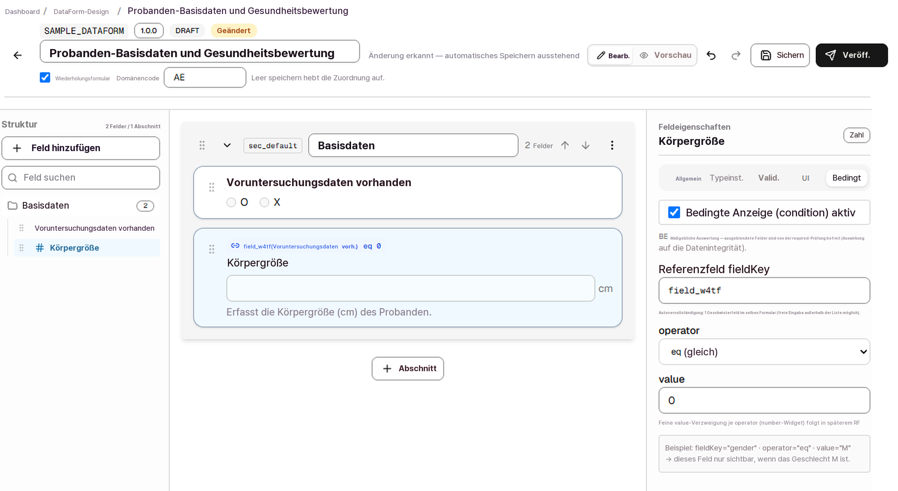
Voruntersuchungsdaten vorhanden den Wert O hatReferenzfeld fieldKey = field_w4tf — verweist auf das Feld „Voruntersuchungsdaten vorhanden“ im selben Formular.
operator = eq (gleich)
value = O — Geben Sie nicht den auf dem Bildschirm angezeigten Text ein, sondern den gespeicherten Wert dieser Option.
Ergebnis nach Eingabe von ①~③ — das Badge auf dem Canvas wird konkret zu 🔗 field_w4tf(Voruntersuchungsdaten vorhanden) eq O. So sehen Sie sofort, welche Bedingung gilt.
Das referenzierte Feld „Voruntersuchungsdaten vorhanden“ muss sich im selben Formular befinden; Sie können es im Strukturbaum prüfen.
Beispiel unten — fieldKey="gender" · operator="eq" · value="M" → dieses Feld nur sichtbar, wenn das Geschlecht M ist.
Zu beachten
Unbedingt prüfen Datenschäden · Formular nicht abschließbar
- • ⛔ Geben Sie bei value nicht den Bildschirmtext, sondern den gespeicherten Wert ein. Wenn Sie auf ein Auswahlfeld verweisen, prüfen Sie zuerst den gespeicherten Wert der Option. Bei falscher Eingabe ist die Bedingung nie erfüllt, und dieses Feld wird niemals angezeigt.
- • Wenn Sie den fieldKey des Referenzfelds ändern oder das Feld löschen, wird die Bedingung ungültig. Die Bedingung ist nicht über den Anzeigenamen, sondern über den fieldKey verknüpft. (Aus demselben Grund wie beim fieldKey-Hinweis in 2.1.)
Leicht missverständliches Verhalten
- • Wenn Sie auf ein Zahlenfeld verweisen, geben Sie den Wert als Zahl ein. Schreiben Sie z. B.
1; ist ein Bereichsvergleich (größer · kleiner) nötig, prüfen Sie operator — eq ist nur bei exakter Gleichheit erfüllt.
Hinweis
- • Bedingungen verkürzen das Formular und reduzieren unnötige Eingaben. Widersprechen sich Bedingungen jedoch, entstehen Felder, die nie angezeigt werden; prüfen Sie daher nach der Einstellung unbedingt in der Vorschau.
Anhang
- 7.1Einstellungen auf einen Blick
7.1Einstellungen des Zahlenfelds auf einen Blick
Einstellungen je Tab
| Tab | Element | Was wird festgelegt | Abschnitt |
|---|---|---|---|
| Allgemein | fieldKey | Tatsächlicher Speicherschlüssel des Werts · Name, auf den Formeln verweisen (nach dem Speichern nicht ändern) | 2.1 |
| label (Anzeigename) | Auf dem Bildschirm angezeigter Elementname | 2.1 | |
| description (Hilfetext) | Ergänzende Beschreibung unter dem Anzeigenamen | 2.1 | |
| Pflichtfeld | Ob eine Eingabe zwingend ist (0 ist kein leerer Wert) | 2.2 | |
| SDV-Verifizierung | Ob Gegenstand des CRA-Quelldatenabgleichs · ob Verifizierung erforderlich | 2.3 | |
| AE-Bedeutungsrolle | Was dieses Feld im AE-Formular bedeutet | ※ | |
| „Nicht gemessen“ zulassen | Ob „konnte nicht gemessen werden“ als Wert erfasst werden kann · Anzeigelabel · Indikator | 2.4 | |
| Typeinstellungen | min · max | Zulässiger Eingabebereich (bei Abweichung wird das Speichern blockiert) | 3.2 |
| min inclusive · max inclusive | Ob Grenzwerte eingeschlossen sind (aktiviert = größer gleich · kleiner gleich / deaktiviert = größer · kleiner) | 3.2 | |
| decimalPlaces | Zulässige Dezimalstellen (0 = nur ganze Zahlen) | 3.3 | |
| unit | Einheitenanzeige rechts vom Eingabefeld (wird nicht mit dem Wert gespeichert) | 3.3 | |
| Automatische Berechnung | Formel · Referenzfelder · trigger · precision (schreibgeschützt · kein Standardwert) | 3.4 · 3.5 | |
| Standardwert (defaultValue) | Bei neuer Eingabe vorbelegter Wert (für Messwerte nicht empfohlen) | 3.6 | |
| Validierung | ruleType | Regelart — bei Zahlen meist Wertebereich | 4.2 |
| expression (min · max) | Bedingung der Regel (eine Seite allein möglich) | 4.3 | |
| message | Bei Verstoß angezeigter Text (mit der tatsächlichen Bedingung abstimmen) | 4.3 | |
| Bei Verstoß · Aktiv | Speichern blockieren / Warnung · Regel aktiv · inaktiv | 4.2 | |
| UI | Layoutbreite | Breite im 12-col grid (bei Zahlen sind Halb · Drittel nützlich) | 5.2 |
| Schreibgeschützt | Anzeigen, aber nicht änderbar | 5.3 | |
| Ausblenden | Nicht angezeigt (gespeicherter Wert bleibt · bleibt in der Pflichtfeldzählung) | 5.3 | |
| placeholder · helpText | Eingabehinweise — Einheit · Dezimalstellen in helpText | 5.4 | |
| Bedingt | Bedingung aktiv | Ob bedingte Anzeige verwendet wird (von der Pflichtprüfung befreit) | 6.1 |
| Referenzfeld fieldKey | Feld im selben Formular als Grundlage der Bedingung | 6.2 | |
| operator · value | Vergleichsart und Vergleichswert (gespeicherten Wert eingeben) | 6.2 |
Unbedingt merken
Unbedingt prüfen Datenschäden · Formular nicht abschließbar
- • Die Formel kennt keine Einheiten. Auch eine falsche Umrechnung wird nicht blockiert, sondern der falsche Wert unverändert gespeichert; prüfen Sie das Ergebnis vor der Veröffentlichung mit echten Werten. 3.4
- • Auch wenn die Berechnung fehlschlägt, ist das Speichern erfolgreich. Bei fehlendem Referenzwert · Division durch 0 bleibt nur dieses Feld leer, und es wird kein Fehler angezeigt — prüfen Sie leere Ergebnisse regelmäßig. 3.4
- • Auch wenn Sie die Einheit ändern, werden vorhandene Werte nicht umgerechnet. Vermischen sich in einem Feld Werte mit unterschiedlichen Einheiten, lässt sich das nicht rückgängig machen. 3.3
- • Verwenden Sie den Zahlentyp nicht für Werte, die führende Nullen benötigen.
007wird zu7. 1.1 - • Stimmen Sie Validierungsmeldungen mit der tatsächlichen Einstellung ab. Wenn nur eine Seite festgelegt ist, die Meldung aber einen beidseitigen Bereich nennt, missverstehen Benutzer dies. 4.3
Leicht missverständliches Verhalten
- •
0ist kein leerer Wert. Um es von „nicht gemessen“ zu unterscheiden, verwenden Sie „Nicht gemessen“ zulassen. 2.2 · 2.4 - • min · max sind die Sperr-Achse. Eine Funktion, die bei Abweichung vom Normalbereich nur warnt, gibt es auf diesem Bildschirm nicht. 3.1
Hinweis
- • Wenn Sie nach dem Speichern den fieldKey ändern, reißt die Verknüpfung zu vorhandenen Daten ab, und auch Formeln werden ungültig. 2.1
Nicht in diesem Dokument behandelt
※ AE-Bedeutungsrolle — befindet sich im Tab „Allgemein“, hat aber keinen eigenen Abschnitt, da keine Aufnahmen des Einstellvorgangs vorliegen. Sie wird nur in Projekten festgelegt, die Formulare für unerwünschte Ereignisse (AE) verwenden; Einzelheiten finden Sie in der AE-Dokumentation.
Nur ganze Zahlen · Messunsicherheit · Normalbereich — sind in der internen Definition des Zahlentyps vorhanden, werden derzeit aber nicht auf diesem Bildschirm eingestellt. Untersuchungselemente, bei denen Werte außerhalb des Normalbereichs hervorgehoben werden müssen, gestalten Sie als Feld der Untersuchungspanel-Familie. 3.1